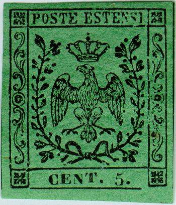
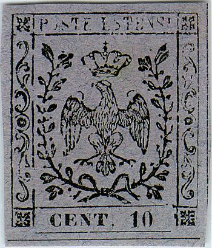
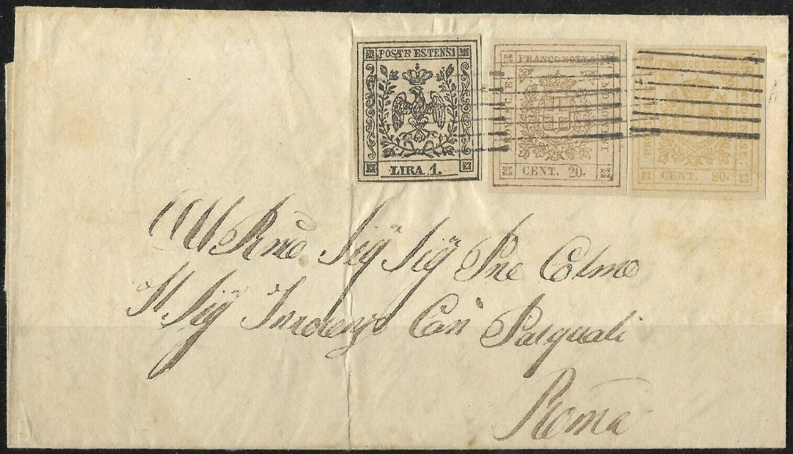
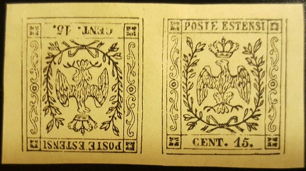
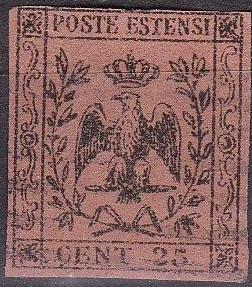
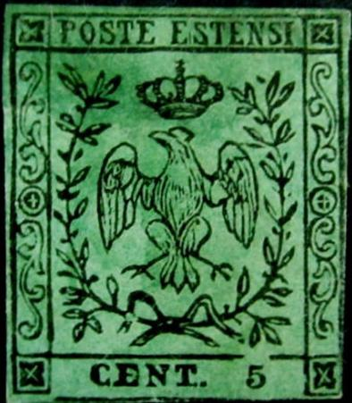
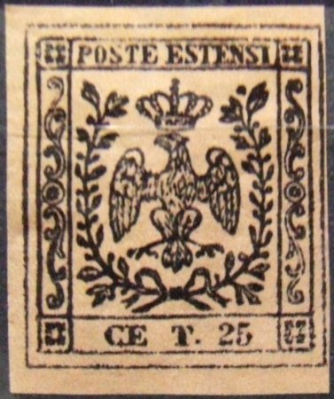
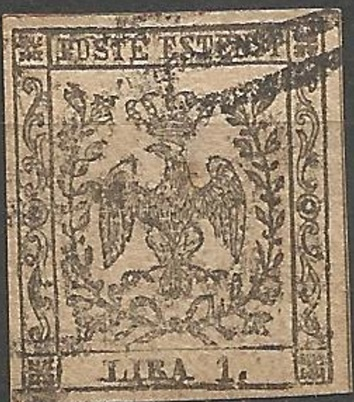

{kind=link}



{kind=link}

Presumably genuine stamps
Return To Catalogue - Modena 1852 issue, forgeries part 1 - Modena 1852 issue - Italy
Note: on my website many of the
pictures can not be seen! They are of course present in the
catalogue;
contact me if you want to purchase the catalogue.
Currency: 100 Centesimi = 1 Lira.
 
Presumably genuine stamps

(Genuine stamps, hole in right upper corner and lower corners)
Forgery detection: the line at the bottom of the stamp does not touch the ornaments on either side in the genuine stamps and furthermore the line under 'POSTE ESTENSI' does not touch the frame on the right hand side. The Fournier forgeries can be detected in this way (the lines are continuous), except for the 9 c newspaper stamp (which is forged in a better way). According to 'The forged stamps of all countries' by J.Dorn, the open corner in the right-hand upper inner frame, the dot over the right hand side leaves and the open pearl at the outermost left branch of the crown should be reliable characteristics of the genuine stamps.

Forgeries with additional framelines, probably made by the same
forger. I've also seen the values 10 c and 25 c of this
particular forgery. The circle on the left hand central side is
too small. A similar forgery of the 40 c value can be found at
http://forgeriesofitalianstates.com/Modena/Modena.htm. This
forgery is listed as type XVII in Billig's handbook. The
"P" is connected to the line in front of it.

1 L forgery and two forgeries of the next set on a forged letter.
All of them with additional framelines.
I've been told that the next forgeries were made by a certain Mr. Martin of Treviso around 1930, they have no gum. I have no further information about these forgeries:


(Martin forgeries)



Another set of forgeries. They even exist in tete-beche variety.

And another primitive forgery of the 25 c; the left wing is
touching the leaves below it. The eagle is sitting on somekind of
a stick. I've only seen the 25 c value of this particular
forgery. I've also seen it cancelled with a double ring town
cancel with unreadable name. It is listed as forgery type XVIII
in Billig's handbook.


Yet another set of forgeries.
I have my doubts about the next copies, they are probably forgeries:


An unlisted 5 c red bogus issue! On
http://forgeriesofitalianstates.com/Modena/Modena.htm, the same
forgery is shown but in black on yellowish. The head of the eagle
is quite different from the genuine stamp. This forgery looks
exactly the same as the illustration used in 'The Stamp
Collector's Handbook' of 1874 by Pemberton (page 71). This
forgery is also identical to the image provided in the John
Edward Gray 'The Illustrated Catalogue of Postage Stamps' of 1870
on page 37 (see image above). This forgery can also be found in
the catalogue of Placido Ramon de Torres
"Album Illustrado para Sellos de Correo" of 1879
(information passed to me thanks to Gerhard Lang, 2016) on page
83.

Primitive forgeries of the 5 c and 40 c values with the eagle
totally different from the genuine stamps. This design was copied
from a Moens illustration from Les
Timbres Poste Illustre of 1864 (plate 14), see the second stamp
shown above. Note that the forger has redone the "5" in
the 5 c forgery (he probably inserted different values to get the
whole set complete?).



Forgeries made by the same forger

Very primitive forgeries of the 1 L stamp. The cross on top of
the crown touches the line above it. This is forgery type XX of
the Billig handbook.

4 c(?) forgery

Forgery of the 1 L stamp with the leaves on the right almost
touching the crown.

Another forgery of the 1 L value.


Another highly suspicious 1 L stamp.
The forger Sperati made a forgery of the 9 c large B.G. stamp. The forgery is lithographed.

Sperati forgery (proof); There is a hole in the upper frame above
the 'O' of 'POSTE' and the 'S's are badly shaped. The 'N' of
'CEN' is also badly done.
{kind=link}
{kind=link}
{kind=link}
{kind=link}
{kind=link}
{kind=link}